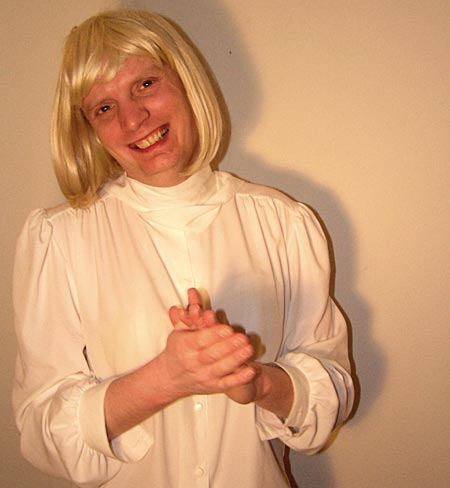

| 1. Februar 2006 |
Dragende damer
Tema: Ud og se på damer -dejlige damer og krævende kvinder

Katarina Collins
Katarina Collins foretrækker titlen 'glam queen' frem for det overbrugte drag queen; eller endnu bedre: en sofistikeret, dekadent og gerne lidt over-the-top female impersonator. Forbilledet er divaen Joan Collins, hvorfra Katarinas efternavn også er hentet.
For Katarina Collins handler det om at være kvinden, hvilket kommer til udtryk i hendes fremtræden, der ikke dyrker den kedelige, gamle parodiering, men derimod en ægte beundring af kvinden.
Sammen med Nattens Dronning 2005, Celine Benze, og fem dansere optræder Katarina Collins ved private arrangementer rundt i landet, såvel som på Madame Arthur og senest i New York og Las Vegas. Her leverer de deres to timer lange Grand Las Vegas Show, hvor Katarina som værtinde står for den alsidige underholdning. Programmet kulminerer til slut i Celine Benzes show. Om tyve år ser hun sig selv bosiddende i Palm Springs i Californien, hvor arbejdet med at gøre smukke mennesker smukkere fortsætter.
Find mere på glamourtransitions.com eller
queensofdenmark.com
Rodesia Red
Rodesia Red fra The Discount Divas er måske lidt snerpet til at begynde med, men formår alligevel at fyre den af, når det gælder.
Inspirationen kommer især fra Kylie og Madonna som Rodesia ynder at lave sine egne alternative fortolkninger af i kostumer, der trækker på 80ernes tendens til skind og læder, og bling i mange farver. Men også Rodesia nævner Joan Collins som divaen Alexis som et forbillede.
Rodesia ses især på Pan og Blender i Århus, men optræder oftest for mindre publikum ved firma- og familiefester. Det handler om underholdning af den mere hyggelige slags; og det bliver det sikkert ved med - også om tyve år, siger Rodesia Red.
Miss Almost Famous
En kompromisløs og næsten berømt dame. Vil hun have den kjole, så vil hun ha’ den - om hun så selv skal sy den i en overdrevet udgave. Hun mener selv, at hun opfører sig pænt og ikke er snobbet, selv om hun sagtens kan gå lige forbi folk uden at hilse.
Luksus og kvalitet er nøgleord for Miss Almost Famous. Det er hendes nyeste pels et eksempel på. Man kan også genkende hende på en overdreven og pervers make-up.
Hun færdes scenevant på blandt andet Masken og Centralhjørnet og nyder at være på Discotek Envy i Palads, fordi heterodrengene der værdsætter at blive sat på plads af en rigtig kælling. Sådan lidt à la Madonna og især Cher, som Miss Almost Famous elsker for hendes naturlighed.
Lidt længere ude i fremtiden gifter Miss Almost Famous sig sikkert med en Hollywood skuespiller og ødsler pengene fra skilsmissen bort på prangende kjoler.
Læs mere på missalmostfamous.dk
Tove Hansen
Tove Hansen giver gerne hr. og fru Danmark et kærligt smæk. Hun tager emner som børn, kønssygdomme og traditioner op, og spørger i den forbindelse også, om det der med ’at leve lykkeligt til deres dages ende’ egentlig sker så tit?
For Tove handler det mest om kærlighed, og om den naturlige skønhed. Ved naturlig forstås det ikke-opstillede, men heller ikke kedelige; der skal være et rigtigt ”jeg” til stede derinde. Toves fremtoning minder måske mest om den af Helle Thorning-Schmidt, men hun nævner samtidig også Kylie og Madonna som vigtige inspirationskilder.
Om tyve år regner Tove med at have åbnet en cafe, hvor hun vil have mulighed for både at optræde og at sprede lidt hyggelig, moderlig omsorg blandt gæsterne.
Se mere på dunst.dk
http://www.panbladet.dk/artikel/412
Print denne side